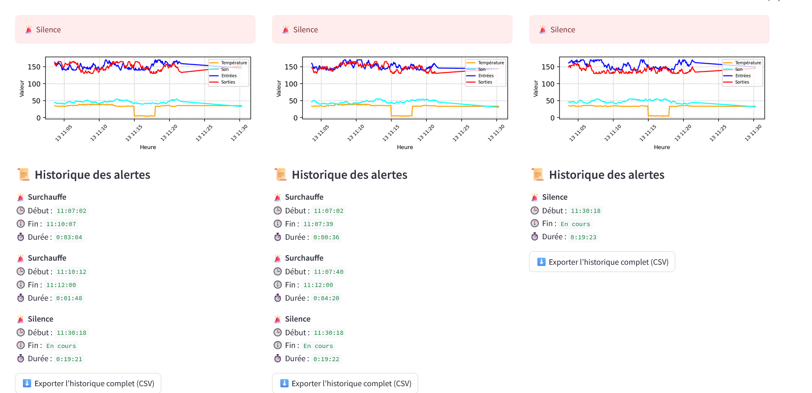

BeeSafe Dashboard est une application de surveillance intelligente des ruches. Elle collecte, analyse et visualise les données des abeilles pour détecter les anomalies en temps réel (surchauffe, silence, essaimage).
